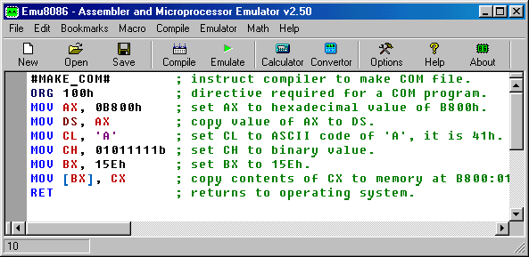
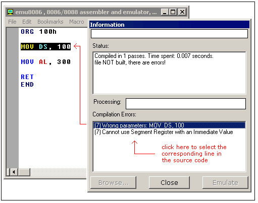

Compiling Assembly Code

Type your code inside the text area, and click [Compile]
button. You will be asked for a place where to save the compiled file.
After successful compilation you can click [Emulate] button to
load the compiled file in emulator.
The Output File Type Directives:
#MAKE_COM#
#MAKE_BIN#
#MAKE_BOOT#
#MAKE_EXE#
You can insert these directives in the source code to specify the
required output type for the file. Only if compiler cannot find any
of these directives it will ask you for output type before creating the file.
Description of Output File Types:
-
#MAKE_COM# - the oldest and the simplest format of an executable file,
such files are loaded with 100h prefix (256 bytes). Select Clean from
the New menu if you plan to compile a COM file. Compiler directive
ORG 100h should be added before the code. Execution always starts
from the first byte of the file.
Supported by DOS and Windows Command Prompt.
-
#MAKE_EXE# - more advanced format of an executable file. Not limited
by size and number of segments. Stack segment should be defined in the
program. You may select EXE Template from the New menu in
to create a simple EXE program with defined Data, Stack, and Code segments.
Entry point (where execution starts) is defined by a programmer.
Supported by DOS and Windows Command Prompt.
-
#MAKE_BIN# - a simple executable file. You can define the values
of all registers, segment and offset for memory area where this file will
be loaded. When loading "MY.BIN" file to emulator
it will look for a "MY.BINF" file,
and load "MY.BIN" file to location specified
in "MY.BINF" file, registers are also set using
information in that file (open this file in a text editor to edit or investigate).
In case emulator is not able to find "MY.BINF"
file, current register values are used
and "MY.BIN" file is loaded at current CS:IP.
Execution starts from values in CS:IP.
This file type is unique to Emu8086 emulator.
".BINF file is created automatically by compiler if it finds #MAKE_BIN#
directive.
WARNING! any existing ".binf" file is overwritten!
#LOAD_SEGMENT=1234#
#LOAD_OFFSET=0000#
#AL=12#
#AH=34#
#BH=00#
#BL=00#
#CH=00#
#CL=00#
#DH=00#
#DL=00#
#DS=0000#
#ES=0000#
#SI=0000#
#DI=0000#
#BP=0000#
#CS=1234#
#IP=0000#
#SS=0000#
#SP=0000#
|
Values must be in HEX!
When not specified these values are set by default:
LOAD_SEGMENT = 0100
LOAD_OFFSET = 0000
CS = ES = SS = DS = 0100
IP = 0000
If LOAD_SEGMENT and LOAD_OFFSET are not defined, then
CS and IP values are used and vice-versa.
In case Load to offset value is not zero (0000), ORG ????h should
be added to the source of a .BIN file where ????h is the loading offset,
this should be done to allow compiler calculate correct addresses.
-
#MAKE_BOOT# - this type is a copy of the first track
of a floppy disk (boot sector).
You can write a boot sector of
a virtual floppy (FLOPPY_0) via menu in
emulator:
[Virtual Drive] -> [Write 512 bytes at 7C00 to Boot Sector]
First you should compile a ".boot" file and
load it in emulator (see "micro-os_loader.asm" and "micro-os_kernel.asm"
in "Samples" for more info).
Then select [Virtual Drive] -> [Boot from Floppy] menu to boot
emulator from a virtual floppy.
Then, if you are curious, you may write
the virtual floppy to real floppy and
boot your computer from it, I recommend
using "RawWrite for Windows" from:
http://uranus.it.swin.edu.au/~jn/linux/rawwrite.htm
(note that "micro-os_loader.asm"
is not using MS-DOS compatible boot sector, so it's better
to use and empty floppy, although it should be
IBM (MS-DOS) formatted).
Compiler directive
ORG 7C00h should be added before the code, when computer
starts it loads first track of a floppy disk at the address 0000:7C00.
The size of a .BOOT file should be less then 512 bytes
(limited by the size of a disk sector).
Execution always starts from the first byte of the file.
This file type is unique to Emu8086 emulator.
Error Processing
Compiler reports about errors in a separate information window:

MOV DS, 100 - is illegal instruction because
segment registers cannot
be set directly, general purpose register should be used:
MOV AX, 100
MOV DS, AX
MOV AL, 300 - is illegal instruction because
AL register has only 8 bits, and thus maximum value for it is 255 (or 11111111b),
and the minimum is -128.
Compiler makes several passes before generating the correct
machine code, if it finds an error and does not complete the required
number of passes it may show incorrect error messages. For example:
#make_COM#
ORG 100h
MOV AX, 0
MOV CX, 5
m1: INC AX
LOOP m1 ; not a real error!
MOV AL, 0FFFFh ; error is here.
RET
List of generated errors:
(7) Condition Jump out of range!: LOOP m1
(9) Wrong parameters: MOV AL, 0FFFFh
(9) Operands do not match: Second operand is over 8 bits!
First error message (7) is incorrect, compiler did not finish calculating
the offsets for labels, so it presumes that the offset of m1 label
is 0000, that address is out of the range because we start at offset 100h.
Make correction to this line: MOV AL, 0FFFFh
(AL cannot hold 0FFFFh value). This fixes both errors!
For example:
#make_COM#
ORG 100h
MOV AX, 0
MOV CX, 5
m1: INC AX
LOOP m1 ; same code no error!
MOV AL, 0FFh ; fixed!
RET
When saving a compiled file, compiler also saves 2 other files that are used
for Emulator to show actual source when you run it, and select corresponding lines.
- *.~asm - this file contains the original source code that was used to
make an executable file.
- *.debug - this file has information that enables the
emulator select lines of original source code while
running the machine code.
- *.symbol - Symbol Table, it contains information that enables to show
the "Variables" window. It is a text file, so you may
view it in any text editor.
- *.binf - this file contains information
that is used by emulator to load BIN file at specified
location, and set register values prior execution;
(created only if an executable is a BIN file).
|